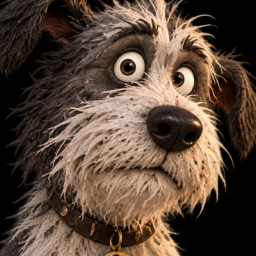
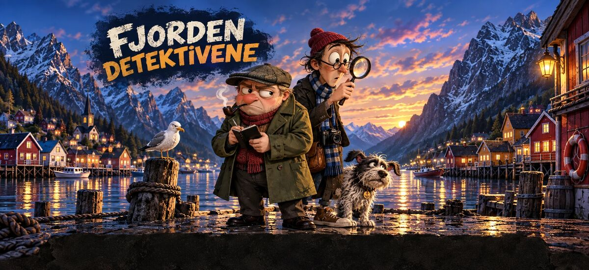
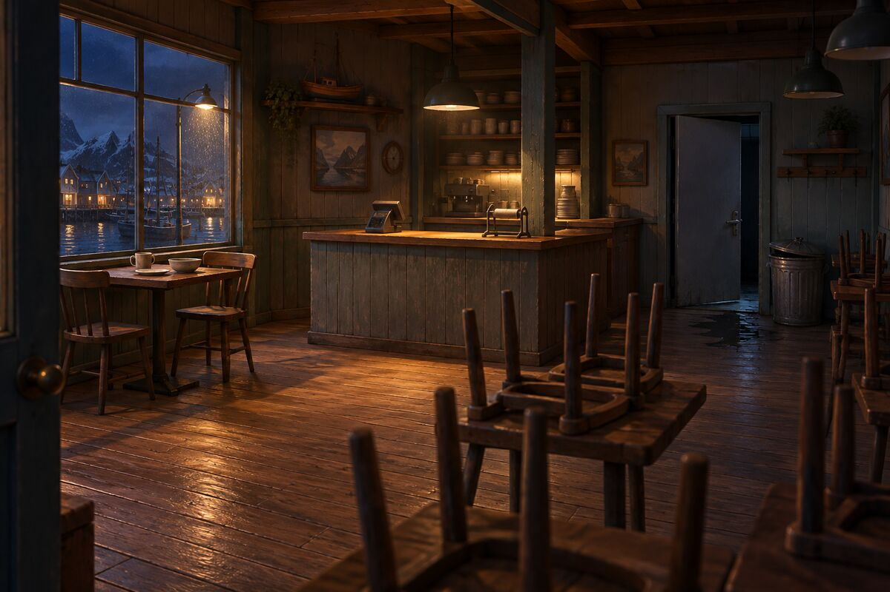

iPhone · Under utvikling
Ingenting er som det ser ut i Sundvik.
Et humoristisk detektivspill fra en liten, oppdiktet fjordby. Du undersøker stedene, avhører vitnene, fanger dem i løgn og setter sammen løsningen selv — ingen gjør det for deg.


Bjørn er en gretten detektiv med notatbok som har sett alt før. Leif er den unge makkeren hans — lang, ivrig og nysgjerrig, med kamera rundt halsen. Og så er det Turbo, en bustete hund som ofte finner sporet før noen av dem.
Sakene henger sammen: små detaljer fra én sak dukker opp i den neste. Nye saker kommer som oppdateringer i det samme spillet.
Hver sak skal kunne løses ved å tenke, ikke ved å gjette. Før en sak kommer med i spillet, blir den kontrollert automatisk: hver løgn må kunne avsløres med et spor spilleren faktisk kan finne, tidslinjen må gå opp, og når alle bevisene er samlet, skal det bare finnes én løsning.
De tre første sakene kan spilles fra start til slutt på iPhone, med tegnet grafikk og stemmer på fire språk. Spillet er ennå ikke lagt ut i App Store, og navnet er et arbeidsnavn. Jeg står for historiene, spilldesignet, grafikkarbeidet, stemmene og programmeringen.
Teknisk: Swift, SwiftUI, saker beskrevet som data, automatisk kontroll av løsningene, og grafikk og stemmer laget med AI-verktøy.